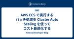

Hatena Developer Blog
https://developer.hatenastaff.com/
はてな開発者ブログ
フィード

AWS ECS で実行するバッチ処理を Cluster Auto Scaling を使ってコスト最適化する 3
3
Hatena Developer Blog
システムプラットフォームチームで SRE をしている id:chaya2z です。 この記事は、はてなの SRE が毎月交代で書いている SRE 連載の6月号です。先月は id:MysticDoll さんの Postfixのログ監視で注意すべきSMTPのステータス仕様について でした。 ECS で実行するバッチ処理を、インスタンス数を最適化する仕組みである ECS Cluster Auto Scaling を使ってコスト最適化した取り組みを紹介します。 ECS の起動タイプに EC2 を使う背景 はてなでは、ECS の起動タイプとして Fargate ではなく EC2 を使用しているサービスが…
4日前
Hatena Engineer Seminar #30「チーム開発編」をオンラインで開催しました #hatenatech 1
Hatena Developer Blog
2024年6月27日（木）に開催した Hatena Engineer Seminar #30 「チーム開発編」のレポートです。はてなのエンジニアリングマネージャーとエンジニアの計3名が「チーム開発」をテーマに、取り組みや学びについて発表しました。トークの発表資料と動画アーカイブを掲載しています。ぜひご覧ください！
5日前
newmoで活躍中の id:yaottiを訪問 | はてな卒業生訪問企画 [#10] 13
Hatena Developer Blog
いま会いたい元はてなスタッフを訪問してお話を伺っていく連載「卒業生訪問インタビュー」。id:onishiが担当する第10回のゲストは、ライドシェア事業を運営するnewmo株式会社で活躍するid:yaotti さんこと、海野弘成さんです。
8日前

Hatena Engineer Seminar #30「チーム開発編」を6月27日にオンライン開催します #hatenatech
Hatena Developer Blog
2024年6月27日（木）に Hatena Engineer Seminar #30をオンライン開催します。はてなのエンジニアリングマネージャーとエンジニアの計3名が「チーム開発」をテーマに、取り組みや学びについて発表します。皆様のご参加をお待ちしております！
19日前
「学びの宝庫」はてなサマーインターンシップ2024！今年の見どころ
Hatena Developer Blog
組織・基盤開発本部長の id:onishi です。募集締切が迫る「はてなサマーインターンシップ2024」ですが、応募するかまだ悩んでいるあなたのために、今年の見どころをいくつかご説明させていただきます。 京都で過ごす一週間 今年のインターンは、京都（講義パート／1週間）＋リモート（実践パート／2週間）のハイブリッド形式です。特に講義の集中している前半を京都で過ごすことで、インターン同期の仲間との絆を深めたり、対面で学ぶことで濃密な一週間を過ごしていただけます。 もちろん、交通費は支給、遠方の方にはホテル（5泊）を手配します。 リモートワークで会社がどう回っているか はてなは、「フレキシブルワー…
1ヶ月前
Postfixのログ監視で注意すべきSMTPのステータス仕様について
Hatena Developer Blog
システムプラットフォームチーム SREのid:MysticDollです。 この記事は、はてなの SRE が毎月交代で書いている SRE 連載の5月号です。先月分は id:heleeen さんの Mackerel で行った障害対応演習を紹介します でした。 先月 Platform Engineering Meetup #8 にて 「はてなにおけるメール基盤とDMARC対応」というタイトルで登壇させて頂きました。 speakerdeck.com この記事では資料では紹介しきれなかった、メール送信基盤の監視で気をつけるべきSMTPのステータスの仕様とそれらを踏まえた監視方法について紹介します。 メー…
1ヶ月前
多くのサービスをうまくさばくのが腕の見せどころ | はてなで働く bps_tomoya にアンケート [#28]
Hatena Developer Blog
はてなで働くエンジニアにアンケートシリーズ第28回は、ノベルチームのAndroidアプリエンジニア、id:bps_tomoyaです。多くのサービスに目を配るなどのタスクの進め方、PRへの気の配り方について聞きました。
1ヶ月前
Go Conference 2024 にはてなからエンジニアが登壇します! ブロンズスポンサーとしても協賛します
Hatena Developer Blog
こんにちは。Mackerelでアプリケーションエンジニアをやっている id:lufiabb です。2024年6月8日(土)に渋谷のAbema Towersで開催されるGo Conference 2024に、はてなから1名登壇することが決まりました！ gocon.jp Go Conference本体としては数年ぶりのオフライン開催なので楽しみですね。また、はてなはブロンズスポンサーとして協賛しています。 当日のご紹介 当日は、はてなのエンジニアが登壇や運営スタッフとしても参加します。 id:utgwkk 11:50 - 12:30 にRoom 1で「Dive into gomock」というタイト…
2ヶ月前
はてなのポッドキャスト Backyard Hatena #34 - ハッカーズチャンプルー、YAPC::Hiroshima、Perl 1.0（id:anatofuz） #byhatena
Hatena Developer Blog
はてな「技術グループ」によるポッドキャスト「Backyard Hatena」を更新。第34では、ノベルチーム エンジニア の id:anatofz を迎え、タイトル通り、ハッカーズチャンプルー、YAPC::Hiroshima、Perl 1.0などについてお話を聞きました。
2ヶ月前
さくらインターネットで活躍中の id:y_uukiを訪問 | はてな卒業生訪問企画 [#9]
Hatena Developer Blog
いま会いたい元はてなスタッフを訪問してお話を伺っていく連載「卒業生訪問インタビュー」。id:onkが担当する第9回のゲストは、さくらインターネット研究所の上級研究員で、SRE の研究者としても活躍するid:y_uuki さんこと、坪内佑樹さんです。
2ヶ月前
Mackerel で行った障害対応演習を紹介します
Hatena Developer Blog
こんにちは、Mackerel チーム SRE の id:heleeen です。 この記事は、はてなの SRE が毎月交代で書いている SRE 連載の4月号で、先月分は id:taxintt さんのサービスの一般公開前からSLI/SLOと向き合うです。 今回は、先日 Mackerel チームで行った障害対応演習で実施した内容と、どのような学びを得たかについて紹介します。 本番障害はできればなくしたいものですが、すべての障害を完全になくし可用性を100%にするのはとても困難です。そのため、障害が発生したときの影響範囲を小さくする仕組みを導入したり、ロールバックを素早く行えるようにしておくなど、影響…
2ヶ月前
はてなサマーインターンシップ2024募集開始！今年は京都とリモートのハイブリッド！
Hatena Developer Blog
CTO の id:motemen です。このたび、はてなサマーインターンシップ2024の募集を開始しました。2024/8/19（月）～2024/9/6（金）に開催する3週間にわたるインターンシップとなります。エンジニアを目指す学生の皆さん、奮ってご応募ください。 「はてなサマーインターンシップ2024」は、1週間の京都オフィスと、2週間のリモートを組み合わせたハイブリッドなインターンシップです。 Webサービス開発の技術を学ぶ前半パートと、開発チームに配属されてサービス開発を実践する後半パートで構成されます。 前半日程は、Webサービスの開発・運用について、講義と課題による集中的なトレーニング…
2ヶ月前
Hatena Engineer Seminar #29 「障害対応編」をオンラインで開催しました #hatenatech
Hatena Developer Blog
2024年4月24日（水）に開催した Hatena Engineer Seminar #29 「障害対応編」のレポートです。はてなに所属するエンジニア3名が「障害対応」をテーマに、それぞれの取り組みについてご紹介しました。トークの発表資料と動画アーカイブを掲載しています。ぜひご覧ください！
2ヶ月前
Hatena Engineer Seminar #29「障害対応編」を4月24日にオンライン開催します #hatenatech
Hatena Developer Blog
2024年4月24日（水）に Hatena Engineer Seminar #29をオンライン開催します。はてなに所属するエンジニア3名が「障害対応」をテーマに、これまでの取り組みやそこでの学びについて発表します。皆様のご参加をお待ちしております！
3ヶ月前
はてなインターンシップ2024を開催します！お知らせ登録フォームを開設しました
Hatena Developer Blog
こんにちは、CTO の id:motemen です。 はてなは今年も、学生を対象としたエンジニア向けの夏のインターンシップ、「はてなインターンシップ2024」を開催します。 今年も昨年に引き続き、8月後半〜9月前半にかけて3週間程度のプログラムを企画しています。今年はリモートとオフィスの両方を活用したハイブリッドの開催を検討しています。 昨年のインターンの様子はこちらをご覧ください。（昨年はリモート中心に行われました） はてなリモートインターンシップ2023 レポートサイト はてなインターンの特徴は、前半は講義、後半は実践と、「学び、そして作る」両方を体験してもらえることです。今回も、最高の夏…
3ヶ月前
try! Swift Tokyo 2024 にスポンサーとして参加しました
Hatena Developer Blog
こんにちは！マンガアプリチームでiOSアプリエンジニアをしています id:fxwx23 です。 2024年3月22日から24日にかけてベルサール渋谷ファーストにて try! Swift Tokyo 2024 が開催されました。はてなは今回シルバースポンサーとして協賛させていただき、はてなの一員として参加してきました。聴講した中で印象深かったセッションについていくつかピックアップしてご紹介します。 tryswift.jp try! Swift Tokyo 2024 に参加してみて try! Swift Tokyo 2024 において印象深かったセッション AIによる言語学習の変革：Duoling…
3ヶ月前
サービスの一般公開前からSLI/SLOと向き合う
Hatena Developer Blog
Mackerel チームで SRE を担当している id:taxintt と申します。 はてなの SRE が毎月交代でブログ記事を書く Hatena Developer Blog の SRE 連載、3月分は私が担当します。2月の記事は id:masayosu さんの はてなにおけるEKSの運用と自動化 (2024年版) でした。 私が所属する Mackerel 開発チームでは、SaaS 型サーバー監視サービスである Mackerel を開発しています。 Mackerel は、テレメトリデータの計装・収集の標準化を目的としたプロジェクトである OpenTelemetry 対応のための開発を進めて…
3ヶ月前
はてなエンジニアによるApple Vision Pro座談会
Hatena Developer Blog
2023年6月のWWDC（World Wide Developers Conference）23で発表され、2024年2月に米国で販売が開始されたApple Vision Proを、はてなのエンジニア5人が入手しました。ということで、3月初旬に5人がApple Vision Proをつけて、オンライン座談会を行いました。その様子をお伝えします。
4ヶ月前
はてなのポッドキャスト Backyard Hatena #33 - はてなとGo、hatena.go（id:maku693） #byhatena
Hatena Developer Blog
はてな「技術グループ」によるポッドキャスト「Backyard Hatena」を更新。第33回では、ゲームチーム エンジニア の id:maku693 を迎え、先日開催したイベント「hatena.go #1」のお話やGoサブ会、スクラムマスター業についてなどについてお話を聞きました。
4ヶ月前
開発者体験を向上させていく活動をやっていきたい | はてなで働く mangano-ito にアンケート [#27]
Hatena Developer Blog
はてなで働くエンジニアにアンケートシリーズ第27回は、マンガアプリチームのAndroidアプリエンジニア、id:mangano-itoです。アプリ開発の進め方、シニアエンジニアとしての働き方などについて聞きました。
4ヶ月前
はてなにおけるEKSの運用と自動化 (2024年版)
Hatena Developer Blog
サービスプラットフォームチームで SRE を担当している id:masayosu です。 先月からですが Hatena Developer Blog にて SRE 連載を始めました。先月の記事は はてなブログの DB を RDS for MySQL 8.0 にアップグレードした話 - Hatena Developer Blog です。 毎月はてなの SRE が交代でブログ記事を書きますのでお楽しみに。 この記事は2024年2月の SRE 連載の記事です。 はてなの EKS 利用について 私が所属するサービスプラットフォームチームでは EKS の運用を続けており、先日 Kubernetes 1.…
4ヶ月前
Gunosyで活躍中の id:skozawa を訪問 | はてな卒業生訪問企画 [#8]
Hatena Developer Blog
いま会いたい元はてなスタッフを訪問してお話を伺っていく連載「卒業生訪問インタビュー」。id:motemenが担当する第8回のゲストは、株式会社Gunosy のテクノロジー本部データサイエンス部で部長を務める id:skozawaさんこと、小澤俊介さんです。
4ヶ月前
hatena.go #1 開催レポート
Hatena Developer Blog
こんにちは、はてなでアプリケーションエンジニアをしている id:lufiabb です。 2024年1月31日（水）に、 hatena.go#1 を東京オフィスで開催しました。当初想定していた以上の方に登録・参加いただけました。ありがとうございました。 このエントリーでは、当日の様子をご紹介します。 hatena.go#1について 「hatena.go」は、Go言語を普段から使っているエンジニアやWebアプリケーションを開発しているエンジニアのみなさまを対象に、Goにまつわる情報発信と情報交換を目的としたイベントです。 今回のhatena.goは、はてなのエンジニア2名による15分トークと、co…
5ヶ月前
はてなのポッドキャスト Backyard Hatena #32 - 15年前のはてなと組織・基盤開発本部のこれから（id:onishi） #byhatena
Hatena Developer Blog
はてな「技術グループ」によるポッドキャスト「Backyard Hatena」を更新。第32回では、取締役 組織・基盤開発本部長 の id:onishiを迎え、15年前のはてなの様子や、onishiさんが本部長を務める「組織・基盤開発本部」についてお話しました。
5ヶ月前
はてなは YAPC::Hiroshima 2024 を全力で盛り上げます！登壇やスポンサー内容のご紹介
Hatena Developer Blog
こんにちは！Mackerel で CRE をしている id:KGA です。最近はイベントの運営をよくやっています。 イベントといえば今週末にいよいよ YAPC::Hiroshima 2024 が開催されますね！ yapcjapan.org 今回の YAPC は｢what you like｣をテーマとしていますが、私の好きなプログラミング言語は何を隠そう Perl です。長年 Perl に触れ、これまでの YAPC にもたくさん参加してきた恩があるため、その恩を返したいなと思い、初めて当日スタッフとして参加することにしました。 私の他にも多くのはてなスタッフが一般参加者としてだけではなくトークへ…
5ヶ月前
Hatena Engineer Seminar #28 「個人開発編」をオンラインで開催しました #hatenatech
Hatena Developer Blog
2024年1月30日（火）に開催した Hatena Engineer Seminar #28 「個人開発編」のレポートです。はてなに所属するエンジニア3名が「個人開発」をテーマに、それぞれの取り組みについてご紹介しました。トークの発表資料と動画アーカイブを掲載しています。ぜひご覧ください！
5ヶ月前
自分が夢中になれるサービスの開発に関わりたいと思った | はてなで働く heleeen にアンケート [#26]
Hatena Developer Blog
はてなで働くエンジニアにアンケートシリーズ第26回は、MackerelチームのSRE、id:heleeenです。SREとしての働き方、リモートワーク下のコミュニケーションなどについて聞きました。
5ヶ月前
はてなブログでの情報漏洩に備えてセキュリティインシデント対応演習を実施しました
Hatena Developer Blog
こんにちは、Webアプリケーションエンジニアのid:Furutsukiです。普段は、はてなブログチームにいます。 はてなブログチームではセキュリティインシデント対応演習を実施しました。演習の実施にあたって何を準備しどのように実施したかを紹介します。 ひとくちにセキュリティインシデントへの対応といっても様々なケースが考えられますが、今回実施したのははてなブログが情報の漏洩元になってしまった場合にサービスの開発・運用チームとしてどうすればよいかを確認する演習です。 当然、全社的に情報漏洩に対する備えとして、もし何かあったらこう動きましょうというフローは用意されているので、それに対してチームとしてよ…
5ヶ月前
はてなエンジニア Advent Calendar 2023往復しました！
Hatena Developer Blog
これははてなエンジニア Advent Calendar 2023 - Hatena Developer Blog 50日目の記事です。 昨日は id:kouki_dan の iOSアプリ開発での写真ライブラリのアクセス方法と設定 - Lento con forza でした。 id:yutailang0119 です、誕生日のお祝いありがとうございます！ はてなエンジニア Advent Calendar 2023は、去年に引き続き、期間を通常のアドベントカレンダーの2倍の50日として、開催しました。 本日が最終日です。 これまでのまとめ はてなエンジニア Advent Calendar 2022往…
5ヶ月前
はてなブログの DB を RDS for MySQL 8.0 にアップグレードした話
Hatena Developer Blog
この記事は、はてなエンジニア Advent Calendar 2023の2024年1月17日の記事です。 はてなエンジニア Advent Calendar 2023 - Hatena Developer Blog id:hagihala です。先日、はてなブログの DB を RDS for MySQL 5.7 から 8.0 へアップグレードしたので、工夫した点などを共有します。 Aurora MySQL 3.x にしなかった理由 MySQL 5.7 -> 8.0 で対応した変更点 character set や collation のデフォルトが変更される explicit_defaults_…
5ヶ月前